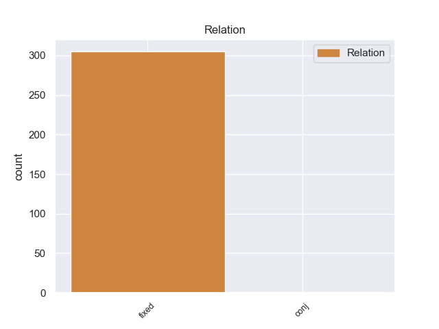
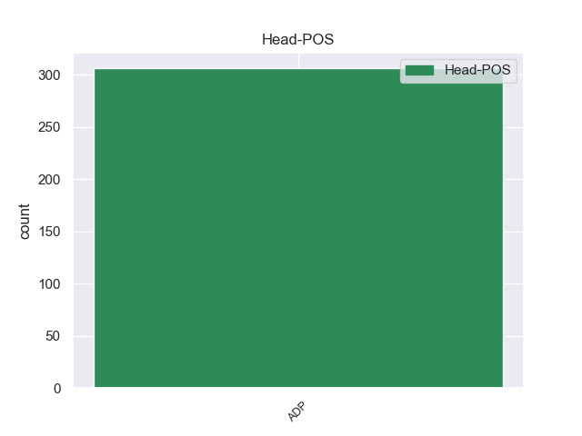
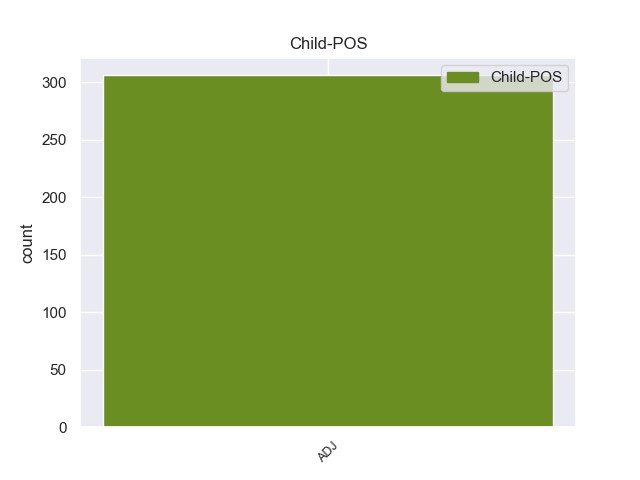

Distribution of features within this leaf



Morphosyntax Rules sorted by frequency.
- When the dependent token is the fixed multiword expression(fixed) of the head token, and the head token is ADP and the dependent token is ADJ, the Case needs to be Acc.
1 Видимо _ _ _ _ 0 _ _ _
2 , _ _ _ _ 0 _ _ _
3 это _ _ _ _ 0 _ _ _
4 вопрос _ _ _ _ 0 _ _ _
5 в в ADP _ _ 0 _ _ _
6 первую первый ADJ _ Animacy=Inan|Case=Acc|Gender=Fem|Number=Sing 5 fixed 5:fixed _
7 очередь _ _ _ _ 0 _ _ _
8 кадровый _ _ _ _ 0 _ _ _
9 - _ _ _ _ 0 _ _ _
10 ведь _ _ _ _ 0 _ _ _
11 существует _ _ _ _ 0 _ _ _
12 , _ _ _ _ 0 _ _ _
13 как _ _ _ _ 0 _ _ _
14 вы _ _ _ _ 0 _ _ _
15 сказали _ _ _ _ 0 _ _ _
16 , _ _ _ _ 0 _ _ _
17 значительный _ _ _ _ 0 _ _ _
18 слой _ _ _ _ 0 _ _ _
19 людей _ _ _ _ 0 _ _ _
20 , _ _ _ _ 0 _ _ _
21 которым _ _ _ _ 0 _ _ _
22 эти _ _ _ _ 0 _ _ _
23 методы _ _ _ _ 0 _ _ _
24 выгодны _ _ _ _ 0 _ _ _
25 ? _ _ _ _ 0 _ _ _
1 Президент _ _ _ _ 0 _ _ _
2 - _ _ _ _ 0 _ _ _
3 во во ADP _ _ 0 _ _ _
4 главе _ _ _ _ 0 _ _ _
5 , _ _ _ _ 0 _ _ _
6 по _ _ _ _ 0 _ _ _
7 правую _ _ _ _ 0 _ _ _
8 руку _ _ _ _ 0 _ _ _
9 от _ _ _ _ 0 _ _ _
10 него _ _ _ _ 0 _ _ _
11 - _ _ _ _ 0 _ _ _
12 премьер _ _ _ _ 0 _ _ _
13 , _ _ _ _ 0 _ _ _
14 по _ _ _ _ 0 _ _ _
15 левую левый ADJ _ Case=Acc|Degree=Pos|Gender=Fem|Number=Sing 3 conj 3:conj _
16 - _ _ _ _ 0 _ _ _
17 первый _ _ _ _ 0 _ _ _
18 вице-премьер _ _ _ _ 0 _ _ _
19 Игорь _ _ _ _ 0 _ _ _
20 Шувалов _ _ _ _ 0 _ _ _
21 . _ _ _ _ 0 _ _ _
non-conforming Examples:
1 Во _ _ _ _ 0 _ _ _
2 всех _ _ _ _ 0 _ _ _
3 случаях _ _ _ _ 0 _ _ _
4 такое _ _ _ _ 0 _ _ _
5 посещение _ _ _ _ 0 _ _ _
6 выглядело _ _ _ _ 0 _ _ _
7 бы _ _ _ _ 0 _ _ _
8 странным _ _ _ _ 0 _ _ _
9 и _ _ _ _ 0 _ _ _
10 по по ADP _ _ 0 _ _ _
11 меньшей меньший ADJ _ Case=Dat|Degree=Pos|Gender=Fem|Number=Sing 10 fixed 10:fixed _
12 мере _ _ _ _ 0 _ _ _
13 несолидным _ _ _ _ 0 _ _ _
14 . _ _ _ _ 0 _ _ _
1 В _ _ _ _ 0 _ _ _
2 лаборатории _ _ _ _ 0 _ _ _
3 механики _ _ _ _ 0 _ _ _
4 природных _ _ _ _ 0 _ _ _
5 процессов _ _ _ _ 0 _ _ _
6 , _ _ _ _ 0 _ _ _
7 которой _ _ _ _ 0 _ _ _
8 он _ _ _ _ 0 _ _ _
9 руководит _ _ _ _ 0 _ _ _
10 , _ _ _ _ 0 _ _ _
11 оценили _ _ _ _ 0 _ _ _
12 роль _ _ _ _ 0 _ _ _
13 антропогенного _ _ _ _ 0 _ _ _
14 фактора _ _ _ _ 0 _ _ _
15 на _ _ _ _ 0 _ _ _
16 современном _ _ _ _ 0 _ _ _
17 этапе _ _ _ _ 0 _ _ _
18 эволюции _ _ _ _ 0 _ _ _
19 биосферы _ _ _ _ 0 _ _ _
20 , _ _ _ _ 0 _ _ _
21 и _ _ _ _ 0 _ _ _
22 выяснилось _ _ _ _ 0 _ _ _
23 , _ _ _ _ 0 _ _ _
24 что _ _ _ _ 0 _ _ _
25 человечество _ _ _ _ 0 _ _ _
26 производит _ _ _ _ 0 _ _ _
27 по по ADP _ _ 0 _ _ _
28 меньшей меньший ADJ _ Case=Dat|Degree=Pos|Gender=Fem|Number=Sing 27 fixed 27:fixed _
29 мере _ _ _ _ 0 _ _ _
30 в _ _ _ _ 0 _ _ _
31 2000 _ _ _ _ 0 _ _ _
32 раз _ _ _ _ 0 _ _ _
33 больше _ _ _ _ 0 _ _ _
34 отбросов _ _ _ _ 0 _ _ _
35 органического _ _ _ _ 0 _ _ _
36 происхождения _ _ _ _ 0 _ _ _
37 , _ _ _ _ 0 _ _ _
38 чем _ _ _ _ 0 _ _ _
39 вся _ _ _ _ 0 _ _ _
40 остальная _ _ _ _ 0 _ _ _
41 биосфера _ _ _ _ 0 _ _ _
42 . _ _ _ _ 0 _ _ _
1 Антропологи _ _ _ _ 0 _ _ _
2 утверждают _ _ _ _ 0 _ _ _
3 , _ _ _ _ 0 _ _ _
4 что _ _ _ _ 0 _ _ _
5 по по ADP _ _ 0 _ _ _
6 крайней крайний ADJ _ Case=Dat|Degree=Pos|Gender=Fem|Number=Sing 5 fixed 5:fixed _
7 мере _ _ _ _ 0 _ _ _
8 1 _ _ _ _ 0 _ _ _
9 / _ _ _ _ 0 _ _ _
10 5 _ _ _ _ 0 _ _ _
11 часть _ _ _ _ 0 _ _ _
12 населения _ _ _ _ 0 _ _ _
13 земного _ _ _ _ 0 _ _ _
14 шара _ _ _ _ 0 _ _ _
15 является _ _ _ _ 0 _ _ _
16 метисами _ _ _ _ 0 _ _ _
17 . _ _ _ _ 0 _ _ _
1 Тем _ _ _ _ 0 _ _ _
2 не _ _ _ _ 0 _ _ _
3 менее _ _ _ _ 0 _ _ _
4 , _ _ _ _ 0 _ _ _
5 многие _ _ _ _ 0 _ _ _
6 психологи _ _ _ _ 0 _ _ _
7 считают _ _ _ _ 0 _ _ _
8 , _ _ _ _ 0 _ _ _
9 что _ _ _ _ 0 _ _ _
10 освобождение _ _ _ _ 0 _ _ _
11 от _ _ _ _ 0 _ _ _
12 тягостных _ _ _ _ 0 _ _ _
13 воспоминаний _ _ _ _ 0 _ _ _
14 путем _ _ _ _ 0 _ _ _
15 возврата _ _ _ _ 0 _ _ _
16 к _ _ _ _ 0 _ _ _
17 ним _ _ _ _ 0 _ _ _
18 , _ _ _ _ 0 _ _ _
19 осмысления _ _ _ _ 0 _ _ _
20 и _ _ _ _ 0 _ _ _
21 записи _ _ _ _ 0 _ _ _
22 - _ _ _ _ 0 _ _ _
23 тоже _ _ _ _ 0 _ _ _
24 своего _ _ _ _ 0 _ _ _
25 рода _ _ _ _ 0 _ _ _
26 творчество _ _ _ _ 0 _ _ _
27 , _ _ _ _ 0 _ _ _
28 по по ADP _ _ 0 _ _ _
29 крайней крайний ADJ _ Case=Dat|Degree=Pos|Gender=Fem|Number=Sing 28 fixed 28:fixed _
30 мере _ _ _ _ 0 _ _ _
31 - _ _ _ _ 0 _ _ _
32 душевная _ _ _ _ 0 _ _ _
33 работа _ _ _ _ 0 _ _ _
34 и _ _ _ _ 0 _ _ _
35 переживание _ _ _ _ 0 _ _ _
36 , _ _ _ _ 0 _ _ _
37 требующее _ _ _ _ 0 _ _ _
38 усилий _ _ _ _ 0 _ _ _
39 . _ _ _ _ 0 _ _ _
1 По по ADP _ _ 0 _ _ _
2 крайней крайний ADJ _ Case=Dat|Degree=Pos|Gender=Fem|Number=Sing 1 fixed 1:fixed _
3 мере _ _ _ _ 0 _ _ _
4 сейчас _ _ _ _ 0 _ _ _
5 . _ _ _ _ 0 _ _ _